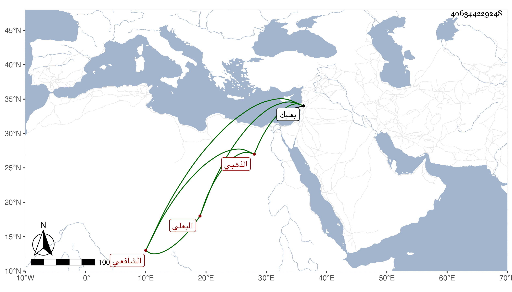

0902Sakhawi.DawLamic.ITO20230111-ara1.EIS1600.406344229248
Biography ID: 406344229248
397
محمد بن أبي بكر بن حسن بن محبوب ناصر الدين البعلي الشافعي الذهبي ويعرف بابن عز الدين . ولد في سنة تسع وسبعين وسبعمائة تقريبا ببعلبك ونشأ بها فقرأ القرآن عند الشمس الأكرومي الحنبلي وسمع جميع الصحيح على الشمس اليونيني والشريف الحسيني والجردي وإلا ورقتين من أوله على ابن الزعبوبي ، وحدث سمع منه الفضلاء قرأت عليه في بلده بعضه ، وحج وكان خيرا يتكسب من صناعة الذهب . مات قريب الستين ظنا .
